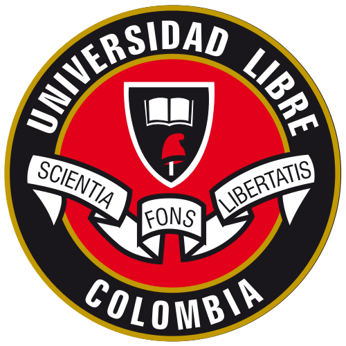

Seccional Cúcuta
Formación jurídica y legal con enfoque humanista.
Expertos en contabilidad, auditoría y finanzas globales.
Liderazgo, emprendimiento y gestión empresarial moderna.
Innovación en redes, software y seguridad digital.
Diseño y construcción de infraestructura sólida y sostenible.
Optimización de procesos y sistemas productivos eficientes.